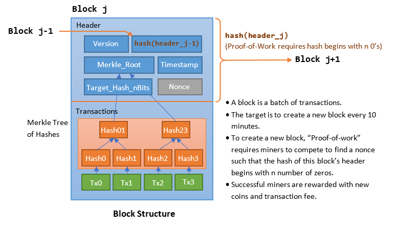
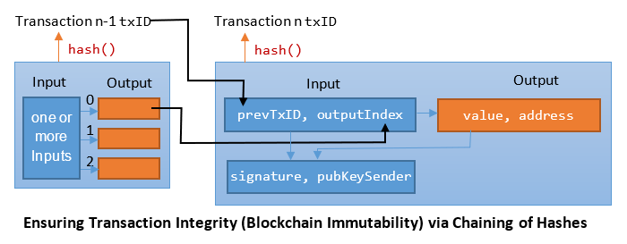
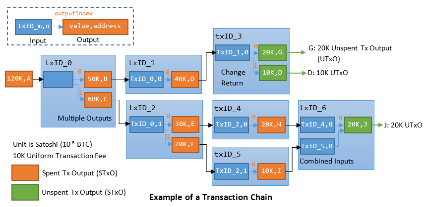
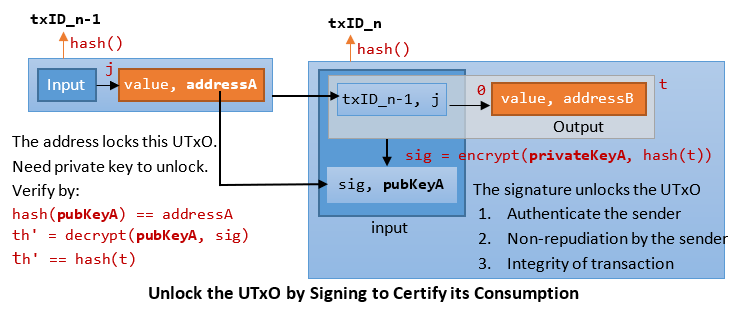
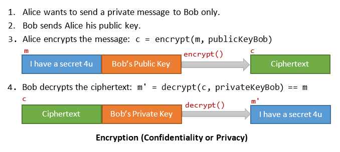
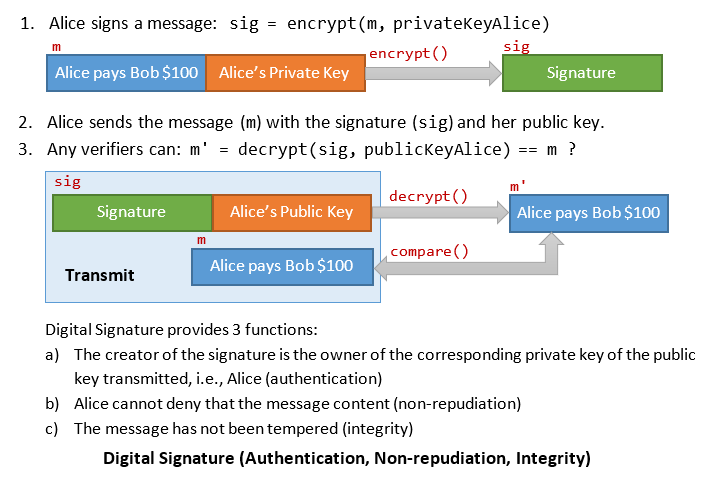
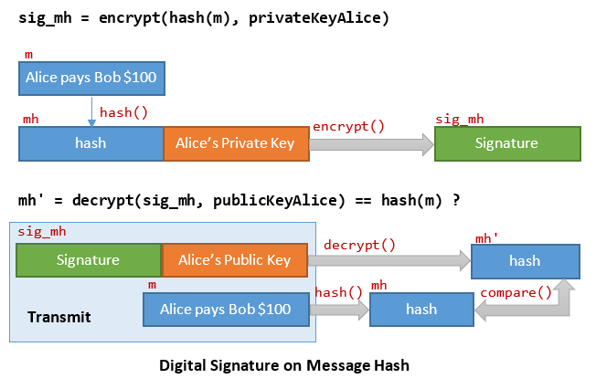
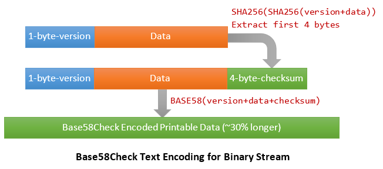
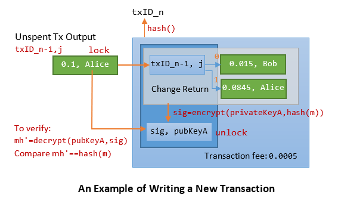
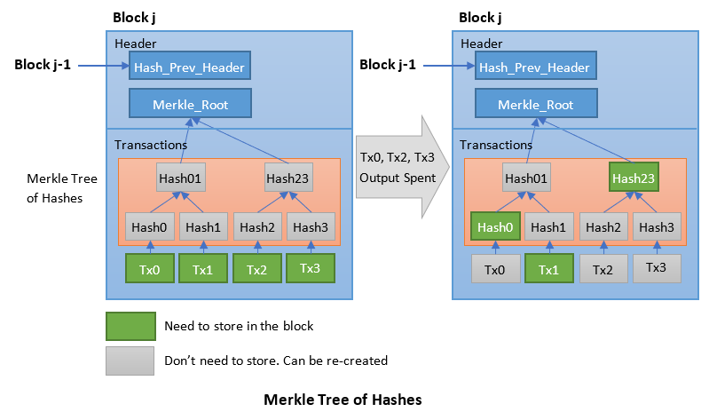

On 31st October 2008, Satoshi Nakamoto, who remains anonymous to-date, published the famous "Bitcoin White Paper", i.e., "Bitcoin: A Peer-to-Peer Electronic Cash System" @ https://bitcoin.org/bitcoin.pdf and created the cryptocurrency Bitcoin (v0.1.0 on Jan 9, 2009).
Bitcoin is a digital currency. Unlike the previous digital currency, bitcoin is the first of its kind, a truly decentralized peer-to-peer digital currency without a central authority, i.e., "a Peer-to-Peer Electronic Cash System". In Bitcoin, Satoshi solves the difficult problem of creating a digital currency without a central authority, which is secure, trusted and does not allow double spending (via a so-called the proof-of-work consensus algorithm), with incentives (through mining rewards) for its ecosystem to be maintained and sustainable.
Bitcoin needs a digital ledger. A ledger is the records of all transactions (of the digital currency). Bitcoin uses a blockchain to implement its digital ledger. A blockchain is a cryptographic database maintained by a network of nodes distributively and collectively. Each node stores a most up-to-date copy. A blockchain protocol is a set of rules that dictate how the nodes in the network should verify new transactions and add them to the database. The protocol employs cryptography, game theory, and economics to create incentives for the nodes to work toward securing the network instead of attacking it for personal gain. If set up correctly, this system can make it extremely difficult and expensive to add false transactions but relatively easy to verify valid ones.
Some Statistics of Bitcoin
The Bitcoin network (as at Apr 2023) from https://blockchair.com/bitcoin:
- about 7,500 nodes.
- about 46,318,000 addresses (a user/wallet can have many addresses for anonymity)
- Circulation: 19,361,221 BTC (upper limit is 21 million BTC)
- about 787,800 blocks.
- about 830,482,000 transactions - average 1000 transactions per block.
- about 2,338,733,000 outputs - average 2.8 outputs per transaction.
- Size of blockchain: 477GB - average 0.62MB per block (the upper limit for block is 1MB), 0.6KB per transaction.
- Price: highly fluctuating
Mining Statistics (as at Apr 2023):
- Mining new coin reward (halved about every 4 years): 50 (2009) ⇒ 25 (2013) ⇒ 12.5 (2017) ⇒ 6.25 (2021).
- Average time between block: 9 minutes (faster than target of 10 minutes).
- Difficulty: 48,712,405,953,118 = 2^45.5; number of leading zero in the target 256-bit hash = 45.5+32 = 80 (30%)
- Hash Rate: 385 EH/s (double SHA256).
- Recommended transaction fee: 32K satoshi per KB (non-uniformed).
Cryptocurrency and Cryptography
Bitcoin is called a cryptocurrency because of its heavy use and reliance of cryptography.
Blockchain uses 2 of the cryptographic algorithms (which will be explained in detail in the next section):
- Hashing: on address for identity, on the block and transaction for identity and integrity, and Proof-of-Work as computational efforts.
- Digital Signature: for authenticating the owner, non-repudiation of transaction by the owner, and transaction data integrity.
Although Bitcoin is called a cryptocurrency, it does not encrypt its data (for confidentiality or privacy). All records are public and open to anyone.
Permissioned vs. Permissionless Blockchain [TODO]
Bitcoin and Ethereum are permissionless. Anyone can do anything supported by the network.
On the other hand, a permissioned network restricts who can join, write transactions and mine new blocks. There is no need for Proof-of-Work (PoW) with trusted miners. Permission networks are closed (not open to public). Examples of permissioned networks are ...
Smart Contract and Ethereum [TODO]
A smart contract contains data and processing scripts that runs on a blockchain network. It can be used to automate the movement of cryptocurrency according to prescribed rules and conditions in the scripts. This has many potential uses, such as facilitating real legal contracts or complicated financial transactions.
Bitcoin Basics
Blockchain Structure
Blockchain
Bitcoin uses a blockchain to implement its digital distributed transaction ledger. The following diagram illustrates the structure of a block, and how the blocks are chained together using the header hash. The transactions in the body of the block are chained together separately; and a binary hash kept in the block header in the form of Merkle Root. The chaining of hashes ensure that the blockchain is immutability and append-only.
- A blockchain provides a distributed, immutable, public transaction ledger for Bitcoin.
- A blockchain is a chain of blocks. A block is a collection of transactions. Each block has a header and can contain a few thousand transactions.
- A network of communicating nodes (called miners) running the bitcoin software maintains the blockchain transaction ledger collectively and distributively - without a central authority.
- The blockchain protect against modification of previous transaction records by chaining up the hashes. Modifying one block requires modification of all hashes in the subsequent blocks.
- The blockchain also protect against double spending via a Proof-of-Work Consensus Protocol (a form of voting to reach a consensus in a decentralized environment - to be explained in detail later). Protecting against double spending without a central authority is the main contribution of Satoshi's Bitcoin white paper.
Block
- Each block contains a hash of the previous block header. Any change to this block's content invalidates the hash of all subsequent blocks in the chain. This ensures the immutability and append-only of the transaction ledger.
- To maintain the transaction ledger, new blocks need to be created to record new transactions.
- Satoshi sets a target is to create a new block (of new transactions) every 10 minutes. To encourage the nodes (miners) to create new blocks, there are rewards for nodes - in terms of new coin and transaction fee. The nodes compete to create new block to receive these rewards, which require computational efforts, called "proof-of-work" (to be explained later).
- Each block is limited to 1MB in size, which can batch up a few thousand transactions.
- Transactions kept in the block are hashed, and the hashes are then paired, hashed, paired again, and hashed again until a single hash remains, known as the merkle root of a merkle tree. Merkle tree supports the purging of spend transactions (to be explained later). The Merkle tree (other than the root) needs not be kept in the block, as it can be re-generated from the transactions stored when needed.
Network and Nodes
[TODO]
Wallet, Public/Private Key Pairs and Addresses
Each bitcoin user has a wallet. Wallets are nodes that build owner's transactions, broadcast transactions to the network, and scan for transactions belonging to the wallet.
Wallets manage a set of one or more keys (private-public key pairs), and performs functions such as key generation and key storage.
A user can be fully identified and referenced by a public key (256-bit). Nonetheless, Bitcoin also uses an address (160-bit), which is a hash of public key, as a shorthand (37.5% less) for public key.
The public-private key pair and the address are generated by the wallet application as follows:
- First, a 256-bit random binary number is generated as the private key.
privateKey k (256-bit) = a randomly generated 256-bit number
- Next, the public key is generated from private key via Elliptic Curve Digital Signature Algorithm (ECDSA) SECP256K1 curve.
publicKey K (256-bit) = SECP256K1(k)
Elliptic Curve algorithm is a one-way function (just like hashing functions). You can compute public key from the private key; but you cannot deduce the private key from the public key. - The 160-bit address is then generated via double hashing, SHA256 followed by RIPEMD160.
address (160-bit) = RIPEMD160(SHA256(K))
Again, you can compute the address from the public key; but you cannot deduce the public key from the address, as hash is a one-way function.
A sender can identify a recipient by his address (commonly-used) or public key.
The public key (and address) allows you to receive transactions, while the private key is necessary to sign and send transactions.
Transactions
Transactions are the most important part of the Bitcoin system, which is designed to ensure that transactions can be created, propagated on the network, validated, and finally added to the global ledger (i.e., the blockchain).
A transaction records transfer of value from sender to recipient in the bitcoin system, e.g., Alice transfers (sends) 10 BTC to Bob.
Transactions, like Blocks, are also Chained to Ensure Integrity
- A transaction records a transfer of bitcoins (BTC) from a sender to a recipient (or recipients). The unit is satoshi or sat, which is 10^-8 BTC (1 BTC = 100 million sat).
- A transaction consists of one or more inputs and one or more outputs.
- An output contains (1) the value in satoshi and (2) the recipient's address (public key hash) or public key (but in the form of a locking script or public-key script, which will be explained later).
- To ensure that the sender has the money, the input of a transaction must refer to a specific unspent output of a specific previous transaction, via the transaction ID (
txID) and an output index. The output index (starting from 0) is needed as a transaction may have more than one outputs. - The
txIDis obtained by hashing the transaction record twice using SHA256:txID = SHA256(SHA256(txRecord))
- Hash chaining is used to ensure the integrity of the transactions. If any bit of this transaction is modified, the hash would be invalid and all subsequent transactions are invalid.
An Example of Transaction Chains
Recall that a transaction consists of inputs and outputs - one or more inputs and one or more outputs. The following diagram illustrates chains of transactions.
- An output contains the value to be transferred and the recipient's address (or public key). Multiple outputs are allowed in a transaction, i.e., a sender can send BTC to multiple recipients in one transaction.
- An input must refer to a previous unspent transaction output (UTxO).
- In Bitcoin, an output is indivisible and must be spent in its entirety, as blockchain is immutable and you cannot modify the value of an output in an existing transaction in a block. Hence, an output is either a Spent Transaction Output (STxO) or Unspent Transaction Output (UTxO). A STxO is no longer needed and can be destroyed.
- Double spending can be easily detected by tracing that output to check if it has been spent in an earlier transaction.
- Multiple inputs are allowed in a transaction, i.e., a sender can use multiple UTxO (with the same public key or different public keys in his wallet) as inputs - a sender is allowed to have many keys in his wallets.
- The sum of inputs can exceed the intended sum of payments (outputs), which is often the case as UTxO is indivisible. In such a case, an additional output is created, returning the change back to the sender. Any input not accounted for in the transaction outputs become the transaction fee, payable to the successful miner.
Unspent Transaction Output (UTxO) Sets
Bitcoin full nodes track all available and spendable outputs, known as unspent transaction outputs or UTxO in an UTxO set. The UTXO set grows as new UTXO is created and shrinks when UTXO is consumed. Every successful transaction represents a change in the UTXO set.
Each user has a wallet contains his keys and a set of UTxO controlled by his keys. The wallet application builds the payment transaction for its owner.
On the other hand, there is no need to track the Spent Tx Output (STxO). If an input cannot be linked to an UTxO in the UTxO set, it is considered invalid.
Unlocking an UTxO by Signing to Certify its Consumption
- As mentioned, an input of a transaction must refer to an unspent transaction output (UTxO).
- Since a transaction may have more than one outputs, an Output Index (starting from 0) together with the Transaction ID (txID), called OutPoint, are used to identity a specific output of a specific transaction. The txID is computed by hashing the Raw Transaction Record twice, as follows:
txID (32-byte) = SHA256(SHA256(txRecord)) outPoint (36-byte) = txID (32-byte) + outputIndex (4-byte)
- An OutPoint is locked by the address (public key hash), say Alice. Only Alice owns the corresponding private key to unlock this OutPoint. No one else has the private key.
- Suppose Alice want to transfer (spend) this OutPoint to Bob, Alice needs to construct a new transaction (with input referencing this UTxO, output to Bob's address), and sign the new transaction (hash) using her private key.
t = outPointSender + value + addressRecipient sig = encrypt(privateKeySender, hash(t))
- For verification, the signature and public key need to be kept in the new transaction as part of the input. First, the address is verified with the public key; then the public key is used to decrypt the signature to verify the transaction hash.
hash(pubKeySender) == addressSender th' = decrypt(pubKeySender, sig) th' == hash(t)
- Anyone can authenticate the sender by decrypting the signature with the public key.
- The signature serves 3 purposes:
- Only the owner of the address has the private key to create the signature (authentication).
- Sender cannot deny she has created the transaction (non-repudiation).
- The transaction data has not been tampered with (integrity).
Incentives For Miners and the Consensus Protocol
Rewards for Recording New Transactions and the Reward Halving Scheme
- New transactions need to be recorded in the ledger - for Bitcoin to work!
- Bitcoin sets a target of constructing a new block (of new transactions) every 10 minutes. In practice, blocks can be created longer or shorter than the interval of 10 minutes.
- To reward nodes (miners) to record new transaction, and hence maintain the transaction ledger, miners are rewarded for creating new block, in the form of new bitcoins and transaction fee.
- A new block is rewarded with 50 BTC initially (in 2009). This amount is half after every 210,000 blocks (approximately 4 years), until it cannot be halved.
Target Block Interval: 10 minute 210,000 / (24 * 60 / 10) = 1458.3 days 4 years * 365 days + 1 day for leap year = 1461 days > 1458.3 days
As at Apr 2023, a new block is rewarded 6.25 BTC due to the reward halving scheme.2009-Jan-09: 50 BTC 2012-Nov-28: 25 BTC (1419 days - every 9.73 minutes < 10 minutes) 2016-Jul-09: 12.5 BTC (1319 days - every 9.04 minutes < 10 minutes) 2020-May-11: 6.25 BTC (1402 days - every 9.61 minutes < 10 minutes) 2024-??: 3.125 BTC
- In theory, new blocks can be created forever with halving reward. However, in practice, the smallest unit in bitcoin is 10^-8 BTC (=1 satoshi). Once this smallest unit is reached, it cannot be halved; and new coin will not be generated as reward. The last new bitcoin will be generated around the year 2140 (for a duration of 150 years), after 6,930,000 (=33*210,000) blocks. After that, a successful miner would be rewarded by transaction fees only.
The smallest division of bitcoin is 1 satoshi = 10^-8 BTC Reward Halving: 50BTC / (2^n) < 10^-8 gives n > 32.2 It can be halved until n=32 2008 + (32+1)*4 = 2140 Number of blocks = 33*210,000 = 6,930,000
- The upper limit of bitcoin is 20.999999998 million BTC, or close to 21 million BTC.
50 BTC * 210,000 * (1 + 1/2 + 1/4 + ... + 1/2^32) = 50 * 210000 * 2 * (1 - 0.5^33) = 20,999,999.99755527 BTC (up to 8 decimal places for satoshi) ~ 21 million BTC
- As at Apr 2023, the amount of bitcoins in circulation is about 19.3 million BTC, out of the limit of 21 million BTC, leaving just around 1.68 million BTC to be mined.
50BTC * 210,000 * (1 (2008-2012)+ 1/2 (2012-2016) + 1/4 (2016-2020) + 1/8 (2020-2024)) = 19.6 million BTC
- Suppose 1 BTC is US$30,000, the entire chain is worth US$30,000 * 21 million = US$630 billion (compared with Singapore 2021 GDP of about US$400 billion produced by the hard work of 5.5 million people for one whole year).
- Why Halving Reward?
- For consolidation as the individual miners and small outfits will drop out of the mining ecosystem or are taken over by larger players. Once all coins are issued, the incentive will switch to transaction fee.
- Over the long term, the bitcoin currency is deflationary. Bitcoin cannot be inflated by printing new money.
Proof of Work (PoW) Consensus Protocol
All nodes (miners) race to create new block so as to receive the rewards (new bitcoin and transaction fee). A consensus protocol is needed to decide which node (miner) is allowed to create the new block and receive the reward, and it shall be verifiable by all the other nodes.
All protocols to reach a consensus in a decentralized network involve some form of voting by all the nodes. The issue is how to count the votes - one man one vote, or some men has more votes?
Bitcoin uses the so-called Proof-of-Work (PoW) (or Proof-of-Computational-Effort) consensus protocol. In PoW, one party (the prover) proves to others (the verifiers) that a certain amount of a specific computational effort has been expended. Verifiers can subsequently check and confirm this expenditure with minimal effort. This process is known as mining in Bitcoin.
In 1992, Cynthia Dwork and Moni Nash proposed imposing proof-of-work (PoW) to deter email spam, sybil attack and denial of service. Regular users need to commit some "computational efforts" to send an email, which the spammer cannot afford.
PoW was popularized by Bitcoin as a foundation for consensus in a permissionless decentralized network. To create new block, it will require miners to compete to solve a mathematical puzzle which requires computational efforts. The first node who solves the puzzle gets to mine the new block and receive the rewards.
Let us revisit the block. Each block has a 80-byte header that contains:
- Version number (4-byte)
- hash of the previous block header (32-byte)
- Merkle root of all transactions in this block (32-byte)
- Timestamp (4-byte)
- Difficulty Target Hash nBits - for controlling the new block rate (4-byte) (to be explained later)
- A random nonce (4-byte)
Bitcoin PoW requires the miners to compete to find a hash for the new block header beginning with n number of zeros (encoded in the Target Hash nBits), by varying a random nonce in the header. The value of n varies automatically, so as to maintain the target block interval of 10 minutes. (This will be explained in detail later.)
Bitcoin's PoW process is as follows:
- The miner collects and validates new transactions in a pool; and compute the merkle tree root. Different miners have different set of new transactions.
- Similarly, different miners have slightly different timestamp.
- The Target hash nbit is set by the mining software automatically based on some rules (to be explained later), which sets the target number of leading zeros in the computed hash.
- The miner picks a nonce and compute hash = SHA256(SHA256(blockHeader)) - hash twice!
- The miner varies the random nonce (in a brute-force manner), until the 256-bit hash begins with the required number n of zero bits.
- The average work required grows exponential with n, as each zero bit has the same probability of 0.5 which give the total probability of 0.5^n.
To find a hash beginning with n zeros, you need to perform 2^n computation. Suppose the total computation power is P hashes/second. In 10 minutes: P * 10 min * 60 sec = 2^n n = log 600P / log 2
Suppose that there are 100,000 CPUs, each capable of hashing 10 Trillion-Hash/sec. Total hashes in 10 minutes = 10^5 CPU * 10*10^12 sec * 60 * 10 = 6 * 10^20. 2 ^ n / 2 (on average) = 6 * 10^20 gives n = 68
- The resultant hash can be verified with a single hash on the header by all the other nodes.
Coinbase Transaction
The first transaction in a block is a special transaction called a coinbase transaction, with the successful miner as the recipient, which is the reward for the miner to win this block. All bitcoins in existence have been created through coinbase transactions.
The input of the coinbase transaction does not link to a previous UTxO, but has a special type called "coinbase" (to be explained in detail later).
Checking for Insufficient Fund in a Transaction
The miners validate the new transactions collected. A transaction has one or more inputs and one or more outputs. The miner traces the input(s) to their referenced UTxO(s) to retrieve their total value(s); and check against the total value of the output(s). Transactions with insufficient fund are invalid and discarded.
Preventing Double Spending
Suppose that Alice has an UTxO of 10 BTC. She consumes this UTxO to Bob, and also to Charlie, in two new transactions.
- Nodes receiving both transactions will discard both transactions as invalid, as an UTxO cannot be consumed twice.
- Nodes receiving only the first or second transaction will try to create a new block with that transaction. One of the nodes succeeds to create a new block with one of the transaction (through PoW). All the other nodes will receive this new block and discard the other double-spend transaction.
The Longest Chain is the Valid Chain
As miners work independently to create new blocks in different part of the network, fork may occur where there are more than one branches in the blockchain.
In Bitcoin, the majority decision is represented by the longest chain, which has the greatest proof-of-work computational efforts invested in it. If a majority (51%) of CPU power is controlled by honest nodes, the honest chain will grow the fastest and outpace any competing chains. In case of a fork, the longest chain is always treated as the valid chain, and branches in shorter chains discarded. Nodes always treat the longest chain to be the correct one. They will switch over to the longest chain if they are in the wrong branches, and continue working on extending it.
More on Preventing Double Spending
Back to Alice's two double-spend transactions. Suppose that two nodes in two parts of the network created two new blocks (at about the same time), each holding one of the Alice's double-spend transaction. These two nodes will broadcast different versions of the next block simultaneously, some nodes may receive one or the other first. They will work on the first one received. A fork is produced. The tie will be broken when the next proof-of work is found and one branch becomes longer; the nodes that were working on the other branch will then switch to the longer one.
You need to wait for at least 10 minutes for your transaction to be blocked. To be safe, you may need to wait for 6 blocks (60 minutes) to be sure that your transaction is not contained in the block that is in a wrong branch. Chance of a block which is 6 level deep being discarded is minimal.
Preventing double spending in a decentralized network through Proof-of-Work is the most important contribution of Satoshi.
Network
The steps to run the mining networks are as follows:
- Wallets construct new transactions.
- New transactions are broadcast to all nodes.
- Each node collects new transactions into a candidate block.
- Each node works on the proof-of-work for its candidate block.
- When a node finds a proof-of-work, it broadcasts the block to all nodes.
- Nodes accepts the block only if all transactions in it are valid and not already spend (double-spend).
- Nodes express their acceptance of the block by working on create the next block in the chain, using the hash of the accepted block as the previous hash.
- In case of fork, the longest chain (which carries the highest computational efforts) is the valid one; and branches in shorter chains are discarded.
"Proof-of-Work" is a Voting System - Voting by Computing Power
A decentralized system needs a consensus protocol. All consensus protocols involves some form of voting. The "Proof-of-Work" consensus protocol is also a voting system, but voting by computing power. Take note that in voting, majority wins.
51% Attack - Majority Wins
To modify a past block (e.g., to remove an earlier payment by him so that he can spend it again), an attacker would have to redo the proof-of-work of the block containing that transaction and all subsequent blocks and then catch up with and surpass the work of the honest nodes. The attackers need to achieve the longest chain at a faster rate than the entire network. This is the attacker vs. the rest, known as 51% attack. Take note that an attacker can only remove his earlier payment and take back money he had spent. He cannot take coins from other to himself, as he does not have the private key to unlock the coins.
If a greedy attacker is able to assemble more CPU than all the honest nodes, he would have to choose between using it to defraud people by stealing back his payments (remove his earlier payment), or using it to generate new coins.
A 51% attacker can rewrite the coinbase transaction to channel the new coins to him - but rewrite coinbase is basically mining new coin, which he can honestly does it faster than others with 51% of the computing power!
Selfish Mining Attack
If a miner has enough power, he can keep a block he mined to himself, and mines the next block in secret. By releasing more than one blocks when other miners generate a block, he can make other miners waste their power. He also earns more reward than he mines honestly. It has been proven that selfish mining is doable with 25% of the total mining power.
Privacy
Although the public can see all transaction (someone sent something to someone else). But as long the owner of public key (or address) is kept anonymous. The public cannot figure out who the someone is.
As an additional safe gauge, a new key-pair should be used for each transaction to keep them from being linked to a common owner. Some linking is still unavoidable with multi-input transactions, which reveal that these inputs were owned by the same owner (likely kept in the same wallet).
Maintaining the Bitcoin Software - Soft Fork vs. Hard Fork
In traditional software, a bug can be fixed with a patch. In bitcoin, it is not so simple. Because transactions on a blockchain cannot be undone, deploying a smart contract is a bit like launching a rocket - The software cannot make a mistake. There is no UNDO.
A soft fork is a backward-compatible upgrade of the blockchain protocol; while a hard fork is not. The upgrade allows nodes running previous versions continue to run in the network, with some functional limitations. Soft forks do not generate a new cryptocurrency; while hard forks do.
[TODO]
Pros and Cons of Bitcoin
Pros:
- Decentralized (Distributed) without a central authority.
- Bitcoin has a fixed amount of 21 million BTC. It cannot be issued indefinitely - inflation proof?
- Ledger is Immutable and secure.
- Low transaction cost.
- New and beautiful technology.
Cons:
- Anonymous (with only an address and public key), enable illegal activities, money laundering and black money.
- Speculative, highly fluctuating price.
- Long transaction time of at least 10 minutes to record a transaction in a new block; and 60 minutes (6 blocks) to be certain that the block is not in a wrong branch of a fork.
- Loss of private key?
- Irreversible transaction? No mistake allowed?
- Distribution of wealth?
Blockchain with the consensus protocol like PoW solves the problem of agreement on the valid data in a distributed environment. However, it is resource intensive (computational power and hence electricity) and slow (every 10 minutes to create a new block to clear some transactions) to run the PoW. It requires a lot of storage (500GB) as all full nodes need to store the entire blockchain, resulted in scaling problem. Furthermore, everyone needs to know about everything in blockchain, which resulted in privacy problem (not for sharing private data in blockchain).
Blockchain is an immutable (append-only) and distributed (without centralized control and censorship resistance) database, but is an expensive, slow, and inefficient database.
Bitcoin is a public, open system. Anyone connected to the network can see every transaction ever recorded in the blockchain.
Review of Cryptographic Techniques and Encoding in Bitcoin
Hashing
Cryptographic Hash Functions
A cryptographic hash function is a function that produces a fixed-length "shorthand" output y (called hash, digest, or digital fingerprint) from an input x of any length. It has the following characteristics:
- Fixed-Length Output: For example, in
y=SHA256(x), y is 256-bit (32-byte) binary number for any input x of any length. Hence, hash can be used as an identifier for data such as bitcoin addresses, blocks and transactions. Examples [TODO] - Near Random and Unique Output: Changing even one bit in the input x produces a very different output y. Hence, hash can be used to verify that the data has not been tampered with, i.e., data integrity.
- One-Way function (or trapdoor): It is easy to compute the output y from input x; but it is difficult (impossible) to deduce input x from output y - you simply have to try all combinations of x's in a brute-force manner to get the desired y. This is known as one-way function, e.g.,
y = x^3 + log x + x*sin x- it is easy to compute y from x, but very hard to find x from y.
A good hash function shall be:
- Computational efficient.
- "Hard" (and take a long time) to find two inputs x1 and x2 that hash to the same output y, known as Collision Resistance.
- "Hard" to infer any property of input x (e.g., whether input is odd or even) from the output y.
- Outputs are evenly distributed, and look random.
Storing Passwords: you should store the password hash in your databases, instead of plain password. Hackers will not be able to recover the plain password from the hash.
Hashing in Bitcoin
Bitcoin uses hash for the followings:
- Identifier: hash is a fixed-width shorthand for a long data. Hence, hash can be used as an identifier for data. Bitcoin uses hash as the identifier for (a) addresses (shorthand of public key) (b) transactions (c) blocks (block header hash).
- Integrity: Even small tampering of data results in a very different hash. Hence, hash can be used to detect data tampering, to ensure the integrity of the data. Bitcoin uses hash to ensure the integrity of (a) transactions (b) blocks.
- Proof-of-Work: Satoshi innovatively uses hash in Bitcoin's Proof-of-Work (PoW) consensus protocol, which give miners incentive (in the form of new coins and transaction fee) to commit computational efforts to create new block of transactions, and hence maintain the transaction ledger.
In summary, hash is used in Bitcoin for:
- addresses (identifier) (shorthand of public key)
- transactions (identifier and integrity)
- blocks (identifier and integrity)
- proof-of-work consensus algorithm (computational efforts)
Hash Function: SHA256
Bitcoin uses SHA256 Hash (Secure Hash Algorithm 256-bit) which produces hash of 256-bit (32-byte)
[TODO]
Hash Function: RIPEMD160
Bitcoin uses RIPEMD160 to produce a 160-bit address from public key, i.e.,
address = RIPEMD160(SHA256(pubKey))
[TODO]
Double Hash
Bitcoin always performs double hash, e.g., SHA256(SHA256(data)) for block header and transaction and RIPEMD160(SHA256(pubKey)) for address.
[TODO] Why double hash?
Hash Collision
Hash collision occurs when two inputs x1 and x2 have the same output hash.
[TODO] How Bitcoin deals with hash collision?
Testing Scripts - Python hashlib
Python hashlib (Secure hashes and message digests) module provides SHA-224, SHA-256, SHA-384, SHA-512 hash algorithms, and platform optimized versions of the older MD5 and SHA1.
>>> import hashlib >>> h1 = hashlib.sha256(b"This is a long message") >>> h1.hexdigest() '56514b402d7bf504c2ee559075d7ce290b4ac8edd01cdbe4238f839048e4855d' # 256-bit, 32-byte, 64-hex >>> h1.digest() b'VQK@-{\xf5\x04\xc2\xeeU\x90u\xd7\xce)\x0bJ\xc8\xed\xd0\x1c\xdb\xe4#\x8f\x83\x90H\xe4\x85]' # printable characters are printed, non-printables display in hex >>> h1.digest_size 32 # in bytes >>> h2 = hashlib.sha256(b"this is a long message").hexdigest() # change 't' to lowercase '25e954760a6a9106e4a3f4d3abca3b9108e485a459736584eef158daf63f4aca' # totally different hash >>> h3 = hashlib.sha256() # construct a hash >>> h3.update(b"this is") # update >>> h3.update(b" a long message") # update again >>> h3.hexdigest() '25e954760a6a9106e4a3f4d3abca3b9108e485a459736584eef158daf63f4aca' # same as above # Trying RIPEMD160 used in bitcoin address >>> data = b"This is a long message" >>> hashlib.new('ripemd160', data).hexdigest() '115da04c16ccbe9ddd0b5ce168fa351a55e707b6' # 160-bit, 20-byte, 40-hex >>> h160 = hashlib.new('ripemd160', b"this is a long message") >>> h160.hexdigest() '088434da9c450c48b76bd0a6afa4b4c389c6539b' >>> h160.digest_size 20 # in bytes
[TODO]
Cryptographic Symmetric/Asymmetric Encryption
Suppose that Alice sends a message to Bob. You can use cryptographic encryption to provide:
- Confidentiality (Privacy): only Bob can read the message; no one else can.
- Integrity: the message has not been tampered during transmission.
- Authentication: the message comes from Alice and no one else.
- Non-repudiation: Alice cannot deny the content of the message.
Symmetric Encryption
In symmetric encryption, a single key is used to encrypt a message; and the same key is used to decrypt the encrypted message.
Symmetric encryption schemes include .... [TODO]
Asymmetric Encryption
Asymmetric encryption uses one pair of key, called public key and private key. The public key is available to everyone. The private key must be kept secretly by the owner. Only the owner and no one else has this private key.
You can use one of the key to encrypt the message; you need to use the other key to decrypt the ciphertext.
Asymmetric encryption schemes include RSA, Elliptic Curve, ... [TODO]
Bitcoin uses Elliptic Curve Digital Signature Algorithm (ECDSA) for keys.
Confidentially (Privacy)
Confidentiality (or privacy) is the most common usage of cryptographic encryption.
Suppose Alice wants to send an encrypted secret message to Bob. She wants to ensure that no one else can decrypt and read the message. Alice uses the public key of Bob to encrypt a message and send to Bob. Only Bob has the private key to decrypt and read the message. No one else can read the message.
In this scheme, the secret can be revealed without revealing the private key.
Bitcoin does not apply encryption for confidentiality, as all transactions are public and open-to-all.
Testing Scripts
[TODO]
Digital Signature
Digital signature, like the analog hand signature, certifies a message by the signer.
Suppose that Alice sends a message (to a bank): "Transfer $100 from Alice to Bob", and wishes to sign and certify this message. Alice uses her private key to encrypt (or sign) the message to create a signature; and sends out the message, signature and her public key. Anyone (the bank) can use Alice's public key to decrypt the signature and verify the message.
For better efficiency, Alice shall sign a hash of the message (which is shorter, and hence faster). The verifiers can decrypt the signature and compare with the message hash.
Public/Private keys and Digital Signature in Bitcoin
Bitcoin uses the public key (or a hash of public key called address) as the identity of the receiver to lock up BTC. Only that receiver has the matching private key to sign a transaction to spend (or unlock) the BTC.
Bitcoin uses digital signature to unlock a BTC for payment to ensure:
- authenticate the owner of BTC
- non-repudiation of transaction
- integrity of transaction detail
In Bitcoin, all transactions are signed by the owners of the BTC, preventing anyone from forging a transaction or altering transaction data.
Testing Scripts
[TODO]
Base58 and Base58Check Text Encoding for Binary Numbers
Recall that Base2 encoding uses 2 symbols (0 and 1); base10 uses 10 (0-9); and base16 uses 16 (0-9, A-F).
ASCII, which is used for encoding texts, symbols and controls, cannot be used to display (or print) binary numbers, as many ASCII codes are non-printable.
Base16 (Hexadecimal) Encoding: Partition the binary stream into 4-bit chunk. Encode each 4-bit chunk with a hex digit (0-9, A-F or a-f). All 16 hex digits are displayable. Since each hex digit is stored as 8-bit ASCII, the efficiency is 50%. This is poor. For example [TODO]
Base64 Encoding: Base64 is a text encoding format for binary streams. Base64 uses 64 printable ASCII symbols (lowercase letters a-z, uppercase letters A-Z, numbers 0-9, plus 2 special symbols + and /) to encode each 6-bit binary number [0b000000(0), 0b111111(63)]. The efficiency is 6/8 = 75%. Base64 is padded with =. For example: [TODO]
Base58 Encoding: Base58 is a text-based binary-encoding format used in Bitcoin. Base58 is a subset of Base64, using 58 printable ASCII symbols: numbers, uppercase letters, lowercase letters, but omitting 4 error-prone symbols 0 (zero), O (capital o), l (lowercase L), and I (capital i) (26+26+10-4=58). To perform Base58 encoding, you need to repeatedly modulus the input with 58 (like converting decimal to hexadecimal). The efficiency of Base58 is slightly lower than Base64 - at about 73%. For example [TODO]
Base58Check Encoding: Base58Check is a Base58 encoding format with an additional 4-byte error-checking checksum appended. The checksum is derived from a hash of the data, which is used to detect tampering and typing errors.
The Bitcoin's Base58Check encoding steps are:
- A prefix version number (1-byte) is added in front of the data. For example, address has the prefix of
0, private key0x80. - Double hash:
h = SHA256(SHA256(prefix + data))
- Extract the first 4-byte of the 32-byte hash as the checksum, and append the checksum to the data.
- Base58 encode:
base58check = base58(1-byte-prefix + data + 4-byte-checksum)
Base58Check is used in encoding 160-bit addresses, private key, and etc.
For example: Address [TODO]
Testing Scripts
[TODO]
Little-Endian Format
In computing, endianess is the order of bytes of a word in computer memory. For example, for a 4-byte (32-bit) integer say 0x12345678, a big-endian system stores the most significant byte (0x12) of a word at the smallest memory address and the least significant byte (0x78) at the largest, i.e., 12 34 56 78 in increasing memory addresses. A little-endian system, in contrast, stores the least-significant byte (0x78) at the smallest address, i.e., 78 56 34 12.
Bitcoin uses little-endian format.
Bitcoin - More than the Basics
The Raw Bitcoin Bit Streams
- Blockchain database is public and open to anyone. You could install your own Bitcoin nodes to get the full blockchain database. You could also use a online Bitcoin Explorer (such as Blockstream Explorer @ https://blockstream.info/, BlockCypher @ https://live.blockcypher.com/btc/, Blockchain.com's Explorer @ https://www.blockchain.com/explorer) which connects to the bitcoin blockchain and show the detail of all blocks.
- You can find the raw transaction format definition from BitcoinDeveloper's reference @ https://developer.bitcoin.org/reference/transactions.html.
Transaction Data Format
This data is taken from Saylor Academy's "CS120: Bitcoin for Developers".
Example
Suppose that Alice uses an UTxO of 0.1 BTC to pay Bob 0.015 BTC, with return change of 0.0845 BTC and transaction fee of 0.0005 BTC, illustrated as follows:
The transaction record bitstream is:
[TODO]
The raw transaction record can be decoded in JSON format as follows:
{
"version": 1,
"locktime": 0,
// input array
"vin": [
{
// 32-byte (256-bit) SHA256 txID of the UTxO used for this transaction
"txID": "7957a35fe64f80d234d76d83a2a8f1a0d8149a41d81de548f0a65a8a999f6f18",
// 4-byte Output Index of the UTxO (to handle multiple outputs in a transaction)
"vout": 0,
// "Unlocking" Signature Script, paired with "locking" ScriptPubKey of the UTxO used
"scriptSig" : "3045022100884d142d86652a3f47ba4746ec719bbfbd040a570b1deccb...(truncated)",
// 4-byte Sequence Number, default is 0xffffffff (4294967295)
"sequence": 4294967295
}
],
// output array
"vout": [
{
// 8-byte value transferred
"value": 0.01500000,
// Public key script used to identify this recipient Bob's 20-byte (160-bit) address
"scriptPubKey": "OP_DUP OP_HASH160 ab68025513c3dbd2f7b92a94e0581f5d50f654e7 OP_EQUALVERIFY OP_CHECKSIG"
},
{
// This output is used to return the change back to Alice's 160-bit address
"value": 0.08450000,
"scriptPubKey": "OP_DUP OP_HASH160 7f9b1a7fb68d60c536c2fd8aeaa53a8f3cc025a8 OP_EQUALVERIFY OP_CHECKSIG",
}
]
}
Transaction Data Format
| Byte | Field | Data Type | Description | |
|---|---|---|---|---|
| 4 | version |
int32_t |
Transaction version number | |
1-9count |
txIns |
txInCount |
compactSize- |
Number of inputs Array of Transaction inputs ( txIn) |
1-9count |
txOuts |
txOutCount |
compactSize |
Number of outputs Array of Transaction outputs ( txOut) |
| 4 | lockTime |
uint32_t |
lock time or block number | |
Note: int16_t, int32_t, int64_t are 16, 32, and 64-bit signed integer type (typedef) in Standard C library. int in C could be 16 or 32-bit. uint16_t, uint32_t, uint64_t are unsigned integers.
Variable-Length "compactSize" Unsigned Integers
The "compactSize" refer to a 1-9 byte variable-length encoded unsigned integer (up to 64-bit) used for count and length, defined as follows:
| Bytes | Value Range | Format |
|---|---|---|
| 1 | [0, 252] |
uint8_t up to 252. Numbers 253, 254 and 255 used below. |
| 3 (1+2) | [253, 0xffff] |
0xfd (253) followed by the number in uint16_t (2 bytes) |
| 5 (1+4) | [0x1_0000, 0xffff_ffff] |
0xfe (254) followed by the number in uint32_t (4 bytes) |
| 9 (1+8) | [0x1_0000_0000, 0xffff_ffff_ffff_ffff] |
0xff (255) followed by the number in uint64_t (8 bytes) |
Transaction Input txIn
| Byte | Field | Data Type | Description | |
|---|---|---|---|---|
| 32 4 |
Referenced UTxO | txID |
hash |
Transaction ID of the referenced UTxO Output Index of the referenced UTxO |
| 1-9 length |
Unlocking Script ( scriptSig) |
scriptLength |
compactSize |
Length of the script Signature script to unlock (and spend) the UTxO |
| 4 | sequenceNumber |
uint32_t |
Used for locktime or disabled (0xFFFFFFFF) |
|
Transaction Output txOut
| Byte | Field | Data Type | Description | |
|---|---|---|---|---|
| 8 | value |
int64_t |
Value to spend in satoshis (10^-8 BTC) |
|
| 1-9 length |
Locking Script ( scriptPublicKey) |
scriptLength |
compactSize |
Length of the script Public key script to lock this UTxO |
Transaction Output's scriptPubKey
A transaction output is locked by a locking script called scriptPubKey or witness script. [TODO]
Transaction Input's scriptSig
A transaction input must consume an UTxO. The sender must provide proof of ownership through a matching unlocking script called scriptSig, which contains a signature and the public key of the sender (for decrypting the signature after verifying with the address - to be explained later).
| Byte | Field | Data Type | Description | |
|---|---|---|---|---|
| 1-9 length |
Signature | signatureLength |
compactSize |
Length of signature Signature with a SIGHASH to unlock the referenced UTxO by signing (encrypting) the transaction with sender's private key |
| 1-9 length |
Public key | publicKeyLength |
compactSize |
Length of the public key Public key (un-hash) |
Coinbase Transaction's Input
The first transaction of a new block is a coinbase transaction, which contains the rewards (new coins and transaction fee) given to the successful miner. The coinbase transaction input (called coinbase) does not reference an UTxO. It has the following format:
| Byte | Field | Data Type | Description | |
|---|---|---|---|---|
| 32 4 |
null |
txID |
-int32_t |
32-byte null: no referenced UTxO4-byte null: no output Index |
| 1-9 varies varies |
Coinbase Data | length |
compactSize |
Length of the coinbase data block height coinbase data (arbitrary miner data) |
| 4 | sequenceNumber |
uint32_t |
Sequence Number | |
The coinbase data are arbitrary and can be used as an extra nonce, in case of exhausting all the values in the 32-bit nonce (to be explained later).
The coinbase transaction's output has the same format.
Transaction Scripts
Bitcoin supports transaction scripts, e.g., locking script (scriptPubKey) and unlocking script (scriptSig). The script is written in a "Forth-like reverse-polish notation stack-based execution language". When a transaction is validated, the unlocking script in each input is executed alongside the matching locking script to see if it satisfies the spending condition.
Bitcoin's scripting language is called a stack-based language because it uses a data structure called a stack (or Last-In-First-Out (LIFO) queue). A stack has two operations: push() and pop(). Push adds an item on top of the stack (TOS). Pop removes the top item from the stack. The script is executed by processing items from left to right. Numbers (data constants) are pushed onto the stack. Operators push or pop one or more items from the stack, act on them, and might push a result back onto the stack.
Pay-to-Public-Key-Hash (P2PKH) Scripts
Bitcoin supports pay-to-address (aka pay-to-public-key-hash). It also supports pay-to-public-key, but less commonly used.
Recall that address is a hash of public key, i.e., address=hash160(SHA256(pubKey)). The shorter 160-bit address (public key hash) is used in the transaction output to identify the recipient, instead of the longer 256-bit public key. There is no way to recover public key from the address. But the public key is needed to decrypt the signature. Hence, the public key is kept in the scriptSig together with the signature, as illustrated.
Combining 2 scripts, first verify the public key vs. address of the signer, then check the signature using the public key of the signer.
scriptSig: <sig> <pubKeyA> scriptPubKey: OP_DUP OP_HASH160 <addressA> OP_EQUALVERIFY OP_CHECKSIG
The steps are:
T [empty] // T is top-of-stack push <sig> T <sig> push <publicKeyA> T <publicKeyA> <sig> OP_DUP: push(push(pop())) T <publicKeyA> <publicKeyA> <sig> OP_HASH160: push(hash160(pop())) T <addressA> <publicKeyA> <sig> push <addressA> T <addressA> <addressA> <publicKeyA> <sig> OP_EQUALVERIFY: compare(pop(), pop()), terminate if it fails T <publicKeyA> <sig> OP_CHECKSIG: pubKeyA = pop(), sig = pop(), decode(sig, pubKeyA) and check T [empty]
P2SH (Pay-To-Script-Hash)
[TODO]
Transaction Fee
User's wallet can compute a transaction fee automatically.
Transaction fee shall be based on the number of kilobytes in the transaction, instead of the value of transaction. Transaction fees are set based on market forces within the bitcoin network. Miners prioritize transactions based on many different criteria, including fees, and might even process transactions for free under certain circumstances. Transaction fees affect the processing priority, meaning that a transaction with sufficient fees is likely to be included in the next block mined, whereas a transaction with insufficient or no fees might be delayed, processed on a best-effort basis after a few blocks, or not processed at all. Transaction fees are not mandatory, and transactions without fees might be processed eventually; however, including transaction fees encourages priority processing.
Many wallet applications use third-party services for fee calculations. One popular service is https://bitcoinfees.earn.com/, which provides an API and a visual chart showing the fee in satoshi/byte for different priorities.
Static fees are no longer viable on the bitcoin network. Wallets that set static fees will produce a poor user experience as transactions will often get "stuck" and remain unconfirmed.
Block Data Format
Block Height and the Reward Halving Scheme
Block height, starting from 0 (for Genesis Block), indicates the depth of the block in the blockchain.
The successful miners receive rewards in the form of new coins (starting from 50 BTC) and transaction fees. Every 210,000 blocks, the rewarded new coin is halved. The scheme continues until the reward cannot be halved. All blocks with a block height less than 6,930,000 (=33 * 210,000) are entitled to receive a reward. After that, the reward of 1 satoshi cannot be halved, and the reward stopped.
As at May 2023, the block height is 787,767 (= 3.75 * 210,000). The new coin rewards is halved three times from an initial of 50, to 25, to 12.5, to 6.25 BTC.
Block Header (80-Byte)
| Bytes | Field | Description |
|---|---|---|
| 4 | version |
Version number of the software |
| 32 | Previous Block header Hash | Referenced previous block |
| 32 | Merkle Root | Merkle root of the Merkle tree hash of transactions |
| 4 | Timestamp | Creation time of this block, in Unix epoch time (number of seconds since January 1, 1970) |
| 4 | Difficulty Target Hash nbits | The Proof-of-Work difficulty target for this block |
| 4 | Nonce | Randomly selected seed used by Proof-of-Work |
Block
| Byte | Field | Data Type | Description | |
|---|---|---|---|---|
| 4 | Block Size |
int32_t |
Size of the block, in bytes, following this field | |
| 80 | Block Header |
- |
As above | |
| 1-9 count |
Transactions (tx's) | tx_count |
compactSize |
Number of transactions in this block Raw Transactions Array |
Block Identifiers
The primary identifier of a block is the block header hash, computed via double hash: SHA256(SHA256(80-byte-block-header)). The current block header hash is not stored in the current block, but the next block in the chain to ensure integrity of the blockchain.
A second way to identify a block is its position in the blockchain, called block height, starting from 0 for the genesis block. The current block height refers to the number of blocks currently in the blockchain. For example, the current block height (as at Apr 2023) is 787,799, indicating the total number of blocks in the blockchain. The maximum block height is 6,929,999 (=33*210,000-1).
Genesis Block
The first block in the blockchain is called the genesis block, and was created by Satoshi Nakamoto in January 9, 2009. It is the common ancestor of all the blocks in the blockchain. The genesis block is hardcoded in the bitcoin software.
The genesis block raw data is:
[TODO]
The genesis block decoded in JSON format is as follows:
{
"hash" : "000000000019d6689c085ae165831e934ff763ae46a2a6c172b3f1b60a8ce26f",
"confirmations" : 308321,
"size" : 285,
"height" : 0,
"version" : 1,
"merkleroot" : "4a5e1e4baab89f3a32518a88c31bc87f618f76673e2cc77ab2127b7afdeda33b",
"tx" : [
"4a5e1e4baab89f3a32518a88c31bc87f618f76673e2cc77ab2127b7afdeda33b"
],
"time" : 1231006505,
"nonce" : 2083236893,
"bits" : "1d00ffff",
"difficulty" : 1.00000000,
"nextblockhash" : "00000000839a8e6886ab5951d76f411475428afc90947ee320161bbf18eb6048"
}
The block 277,314 has the following data (data taken from "Saylor Academy CS210"):
{
"size" : 43560,
"version" : 2,
"previousblockhash" :
"00000000000000027e7ba6fe7bad39faf3b5a83daed765f05f7d1b71a1632249",
"merkleroot" :
"5e049f4030e0ab2debb92378f53c0a6e09548aea083f3ab25e1d94ea1155e29d",
"time" : 1388185038,
"difficulty" : 1180923195.25802612,
"nonce" : 4215469401,
"tx" : [
"257e7497fb8bc68421eb2c7b699dbab234831600e7352f0d9e6522c7cf3f6c77",
......
"05cfd38f6ae6aa83674cc99e4d75a1458c165b7ab84725eda41d018a09176634"
]
}
Block Pace (Block Interval)
Block Pace (or Block Interval) in minutes. In bitcoin, the target block pace is 10 minutes. In practice, block pace could be more than or less than 10 minutes.
The Difficulty Target to achieve Block Pace of 10 minutes
The process of mining is to hash the block header repeatedly, changing the nonce, until the resulting hash (h) is equal or less than a hash target (hashTarget) specified in the block header, i.e., h <= hashTarget.
The hash target is 32-byte (256-bit). But only 4-byte are allocated in the header to specify its value. hashTarget is specified in mantissa-exponent notation (like scientific number but in exponent of 256). The first byte is the exponent, followed by 3 byte of mantissa (coefficient). For example, if target bits is 0x1705c739, the exponent is 0x17 and the mantissa is 0x05c739.
The formula to calculate the hashTarget is:
hashTarget = mantissa * 2^(8*(exponent-3))
In our example, the hashTarget is:
hashTarget = 0x05c739 * 2^(8*(0x17-3)) = 0x05c739 * 2^160 = 0x05c739 [160-bit of 0's] = [72 bits of 0's] 05c739[=24 bits] [160 bits of 0's] (total 256-bit) = 72+4+1 = 77 leading zeros
Take note that any hash computed <= hashTarget is accepted. In the above example, some values with 77 leading zeros (more than hashTarget) will be rejected, but values with 78 or more leading zeros will certainly be accepted, as they are definitely smaller than hashTarget.
Re-Targeting to adjust the Difficulty to control the block pace
The hashTarget is a dynamic parameter that is periodically adjusted to meet the desired target of 10-minute block pace. Every 2,016 blocks (about 2 weeks), all nodes adjust this value based on the following equation.
newHashTarget = oldHashTarget * (Actual Time of Last 2016 Blocks / 2016 * 10 minutes)
If the network is creating blocks faster than every 10 minutes, the difficulty increases (hashTarget decreases with more leading zeros). If block discovery is slower than expected, the difficulty decreases (hashTarget increases with less leading zeros).
To avoid extreme volatility in the difficulty, the re-targeting adjustment must be less than a factor of four (4) per cycle. i.e., x4 or x1/4. If the required target adjustment is greater than a factor of four, it will be adjusted by a factor of 4 and not more.
"Difficulty" Value
Many Bitcoin explorer shows a "difficulty" value, which is measure of how difficult it is to find a hash below the hashTarget. It is defined as follows:
difficulty = difficulty_1_target / current_target
difficulty_1_target usually represents a hash target with 32 leading zeros and the rest are ones (used in Satoshi's Genesis Block). The 4-byte mantissa-exponent representation is 0x00ffff.
difficulty_1_hash_target = 0x00ffff * 2^(8*(0x1d - 3)) = 0x00000000ffff0000000000000000000000000000000000000000000000000000
The "difficult" for the above example is:
0x00ffff * 2^(8*(0x1d - 3)) / 0x05c739 * 2^(8*(0x17-3))
= 0x00ffff * 2^208 / 0x05c739 * 2^160
= 0x00ffff/0x05c739 * 2^48
= 65,535/378,681 * 2^48
= 48,712,405,953,118
= 2^45.5
It is 2^45.5 times more difficult than Satoshi's original hash target.
"Hash Rate" Value
Many Bitcoin explorer also shows a "hash rate" value. Hash rate can be expressed in billions/trillions/quadrillions/quintillions hashes computed per second. One hash refers to one double SHA-256 computation, i.e. one SHA256(SHA256(input)).
Bitcoin uses Exa Hashes per second (EH/s). 1 Exa = 1024*1024*1024*1024 = 2^40 = 1,099,511,627,776 = ~10^12 (trillion).
The current hash rate (as at Apr 2023) is about 385 Eh/s (double SHA-256). In other words, in 10 minutes, there is a total of 385 * 60 sec * 10 min * 2^40 = 253,987,186,016,256,000 double-hash computations.
Some of the relevant measures are:
- MHash/s = millions hashes per second (double sha256 raw speed performance)
- MHash/J = millions hashes per joule (energy efficiency; 1 joule of energy is 1 watt during 1 second: 1 J = 1 W*s)
- W = watt (maximum power consumption, i.e. energy per unit of time: 1 W = 1 J/s)
A Home PC can do around 1-100 MH/s. A typical node can do 100 TH/s.
The hash rate can be computed from difficulty as:
hashRate = difficulty * 2^32 / (60 sec * 10 min)
What if all the values in the 32-bit nonce were used?
If all 32-bit values of the nonce were tested but no hash can be found to meet the target (called nonce overflow), you can update the timestamp in the header, or change the "extra nonce" in the coinbase transaction (which changes the merkle root in the header). Then, re-hash.
Reclaiming Disk Space and Merkle Tree
The spent transactions can be discarded to save disk space, as it cannot be spent again, can be treated as non-existence.
To facilitate this, transactions are hashed in a Merkle Tree (or Binary Hash Tree), with only the root included in the block header. Old blocks can then be compacted by pruning off branches of the tree. The interior hashes do not need to be stored too, as illustrated in the following example.
A merkle tree (or binary hash tree) is an efficient data structure used for summarizing and verifying the integrity of large set of data.
// Bitcoin uses double hashes
hash_j = SHA256(SHA256(tx_j)) = txID_j
hash_m_n = SHA256(SHA256(txID_m + txID_n))
Because the merkle tree is a binary tree, it needs an even number of leaf nodes. If there is an odd number of transactions to summarize, the last transaction hash will be duplicated to create an even number of leaf nodes, known as a balanced tree.
Compare with a single-level hash: [TODO]
- Same hash length of 32-byte
- To prove that a specific transaction is included in a block of N transactions, you only need to compute and compare log2N hashes corresponding to the level of the tree (called merkle path). It is provided that the full merkle tree is available for verification, which requires storage space.
- Support pruning of spent transaction.
Wallets
Each bitcoin user has a wallet. A wallet is an application that serves as the primary user interface for bitcoin user. The wallet controls access to a user's money, managing keys and addresses, tracking the balance, and creating and signing new transactions of the owner.
Wallet can generate public-private key-pair and address. A user can have many keys in his wallet to improve his anonymity. Bitcoin uses Elliptic Curve Digital Signature Algorithm (ECDSA) SECP256K1 curve to generate a public key from a randomly generated private key. The 160-bit address is a shorter hash of 256-bit public key.
private_key k (256-bit) = a randomly generated 256-bit number public_key K (256-bit) = SECP256K1(k) address (160-bit) = RIPEMD160(SHA256(K))
The public key (address) allows you to receive transactions, while the private key is necessary to send transactions.
The 160-bit Address, which is a double hash of 256-bit public key, is used as a shorthand for public key. Although address is specified in the output, you need the public key to decrypt and check the signature. The public key is contained in the scriptSig. With the address in the output instead of public key, the output is shorter but the input is longer. The UTxO's need to be tracked and are maintain in an UTxO set. Inputs need not be tracked.
A user's wallet contains one or more public-private key-pairs (and the corresponding addresses). It also contains a set of UTxO's locked by one of the public keys (addresses) in the wallet. When we say that a user's wallet has "received" bitcoin, what we mean is that the wallet has scanned the network and detected on the blockchain an UTxO that can be spent with one of the keys kept in that wallet. Thus, a user's bitcoin "balance" is the sum of all UTxO's that user's wallet can spend and which may be scattered among hundreds of transactions and hundreds of blocks in the blockchain.
Building a P2PKH transaction
Bitcoin supports both P2PK (Pay-To-Public-Key) and P2PKH (Pay-To-Public-Key-Hash or Pay-To-Address).
Wallets can build transactions of payments for its owner. For example, suppose Alice's wallet want to build a transaction to pay Bob some bitcoin. The steps for building P2PKH (Pay-to-Address) are:
- Alice's wallet gets the value (in satoshis) and recipient's address (
addressBob). - Alice's wallet selects one or more UTxOs it controls with enough value to meet the requested value.
- For each UTxO, it writes an input and one or more outputs.
- In each output, it writes the value, and puts the recipient's address (
addressBob) in a locking scriptscriptPubKeyto lock this output for the particular recipient (Bob). - For the input, it writes the
txIDandoutputIndexof the referenced UTxO. It then creates an unlocking scriptscriptSigto certify that she is the owner of the UTxO. ThescriptSigconsists of the signature (encryption of the transaction data using herprivateKeyAlice) andpublicKeyAlice(needed for decrypting signature)."scriptSig": "<sig> <publicKeyAlice>"This unlockingscriptSigshall match the lockingscriptPubKeyin the referenced UTxO:"scriptPubKey": "DUP HASH160 <addressAlice> EQUALVERIFY CHECKSIG"The signature is verified by first matching the address with the public key, then using the public key to decrypt the signature to verify the transaction detail.
Nondeterministic vs. Deterministic Wallets
There are two types of wallets, distinguished by whether the keys they contain are related to each other or not.
- The first type is a nondeterministic wallet, where each key is independently generated from a random number. The keys are not related to each other. This type of wallet is also known as a JBOK wallet from the phrase "Just a Bunch Of Keys".
- The second type of wallet is a deterministic wallet, where all the keys are derived from a single master key, known as the seed. All the keys in this type of wallet are related to each other and can be generated again if one has the original seed. There are a number of different key derivation methods used in deterministic wallets. The most commonly used derivation method uses a tree-like structure and is known as a hierarchical deterministic or HD wallet.
[TODO] more
The Bitcoin Network and Nodes
A node can serve one or more of the following functions:
- Network Routing nodes: All nodes shall have the routing function to participate in the network.
- Full blockchain nodes or full nodes: Full nodes maintain complete up-to-date copy of blockchain. They can autonomously and authoritatively verify any transaction without external reference. Some nodes maintain only a subset of the blockchain and verify transactions using a method called simplified payment verification, or SPV. These nodes are known as SPV nodes or lightweight nodes. To run a full node, it takes more than 500GB of disk space and a few days to sync the network. The most common full node implementation is the reference client "Bitcoin Core", also known as the "Satoshi client", e.g.,
/satoshi:0.8.6/. - Mining nodes or Miners: Mining nodes compete to create new blocks by running specialized hardware to solve the Proof-of-Work algorithm.
- Wallets: User wallets might be part of a full node or SPV nodes.
Network Discovery
When a new node boots up, it must discover (at least one) other nodes on the network in order to participate. To connect to a peer, the new node establishes a TCP connection on port 8333. The node starts a handshake by transmitting a version message. The peer checks if the new node is compatible, and sends back a version acknowledged (verack) message.
How does a new node find peer? The first method is to query some DNS servers, called DNS Seeds, that provide a list of IP addresses of bitcoin nodes. For example, the "Bitcoin Core client" contains the names of nine DNS seeds for diversity. Alternatively, the bootstrap node can provide the IP address of at least one bitcoin node in its startup.
Testing Scripts in Python
bitcoinlib (@ https://pypi.org/project/bitcoinlib/)
bitcoinlib (@ https://pypi.org/project/bitcoinlib/) is a Bitcoin, Litecoin and Dash cryptocurrency library for Python. It includes a fully functional wallet....
[TODO]
Bit @ https://ofek.dev/bit/
[TODO]
Continuous Development
Consensus Protocols - PoW or PoS
In a decentralized environment, consensus involves some forms of voting cum competition (with regard) by all the nodes.
In PoW, the nodes (called miners) vote by computing power. All nodes compete to solve a puzzle, which needs computational efforts. The miner with computing power and luck wins and get the rewards, everyone else can easily verify and agree/disagree. In other words, miners burn electricity to try to win a lottery - the chance of winning is directly proportional to their computing power.
Bitcoin's PoW is consuming so much electricity, which is not sustainable (nor green, ESG). Ethereum started with PoW, but moved from PoW to PoS in September 2022 to go green. However, bitcoin's miners have too much on stake (10 minute per block ⇒ 24*6=144 blocks per day ⇒ 144*6.25=900 BTC per day ⇒ At US$30,000 per BTC ⇒ US$27 millions per day). Furthermore, Bitcoin mining is dominated by five(?) big mining pools. They are unlikely to switch to PoS, unless major countries pass law to stop the PoW.
Block Size Limit
Satoshi hardcoded the block size limit to 1 MB, which can store about 2000 transactions. With a new block every 10 minutes, 2000/(10*60) = 3.3 transactions per second globally across the entire bitcoin network. This is low. Many transactions will never get pick up (unless large transaction fee is offered), as a new block cannot hold too many transactions.
The debate about increasing Bitcoin's block size limit started in 2015 and caused great controversy in bitcoin community. In 2017, there was a hard fork to increase the block size limit from 1 to 8MB, which is known as "Bitcoin Cash". But the majority of the miners and developers stuck with the traditional chain, and Bitcoin Cash became just another Bitcoin spinoff.
Nonetheless, in 21 July 2017, an upgrade (soft fork) to the Bitcoin protocol called "Segregated Witness" (or "SegWit") replaced the concept of block size with block weight and effectively increased the block size limit by four times to 4 MB.
Segregated Witness (SegWit) Upgrade
[TODO].
REFERENCES & RESOURCES
- Satoshi Nakamoto, "Bitcoin: A Peer-to-Peer Electronic Cash System" (aka "Bitcoin White Paper"), Oct 31, 2008 @ https://bitcoin.org/bitcoin.pdf
- Bitcoin Developers @ https://developer.bitcoin.org/index.html
- Saylor Academy, "CS120: Bitcoin for Developers" @ https://learn.saylor.org/course/view.php?id=500.
- "Bitcoin Basic" by RiverFinancial @ https://river.com/learn/bitcoin-basics/.
- [TODO]